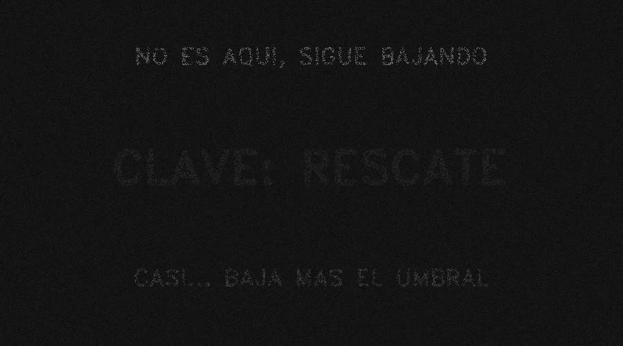
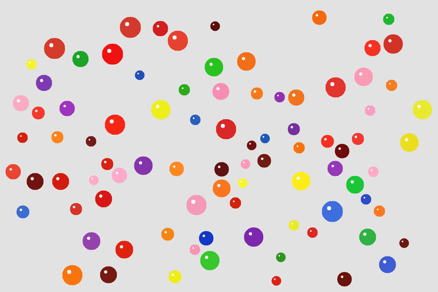
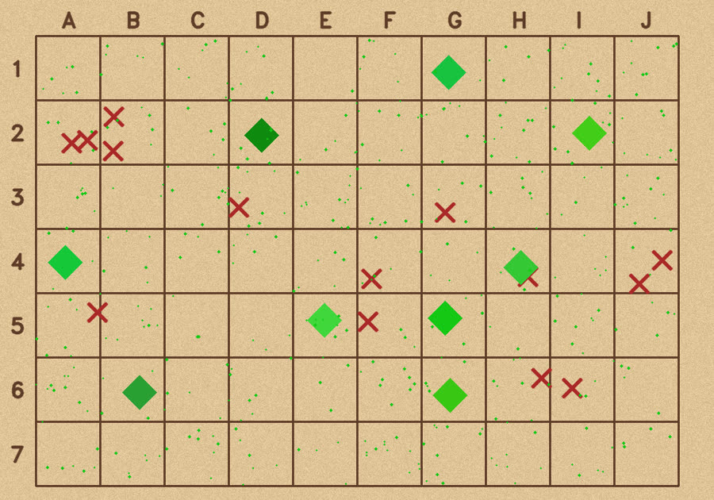

Humanoid Team Captain & Founder · VantTec
Founded the campus's first humanoid team (18 people). On our Unitree G1: BFM-Zero run by voice, boxing by motion tracking, and XR teleop for VLA data.
Robotics student at Tec de Monterrey. I put recent robot-learning research on real hardware: a Unitree G1 humanoid and a Lite3 quadruped.
Founded the campus's first humanoid team (18 people). On our Unitree G1: BFM-Zero run by voice, boxing by motion tracking, and XR teleop for VLA data.
Zero-shot object search on a quadruped: OneMap running onboard a Lite3, and a fair benchmark against NVIDIA's ReMEmbR.
Counting tomatoes from a greenhouse robot at 96% accuracy, without counting any of them twice.
A drone that inspects aircraft indoors, without GPS, localized by LiDAR-inertial odometry.
15-person drone team. 5th place at Torneo Mexicano de Robótica and Monterrey's first drone pizza delivery.
Robotics for 13-year-olds: from their first line of Python to a Tello drone that flies through a gate on its own.


